Activity: Designing in the context of a Synchronous assembly
Activity
In this activity you will learn how Synchronous technology can be of benefit when designing in the context of an assembly. You will open an existing assembly and use adjacent parts to refine the sizing and spacing of the faces and parts in the assembly. You will also use geometry from one part to create a cavity in an adjacent part.
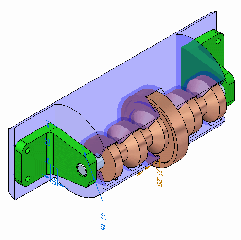
Click here to download the parts and assembly files for the activity.
-
Open spindle_cover.asm. Activate all the parts.
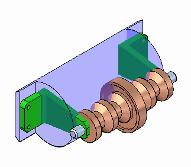
Choose the Select command and click on each part in PathFinder. Each relationship that has been used to position the assembly can be viewed by moving the cursor over the relationships in the lower pane of PathFinder. These existing assembly relationships as well as Design Intent relationships are honored when manipulating geometry with Solid Edge.
The brackets holding the axle do not fit correctly on the plastic cylindrical part, and the face of the plastic part that the brackets attach to is not wide enough to accommodate the brackets. You will modify the parts in the context of the assembly to correct these problems.
Set the Selection Priority to Face.
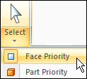
Select the face shown with the steering wheel in the position shown.
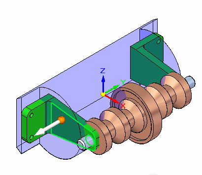
Select the additional faces shown. You should have a total of 4 faces selected.
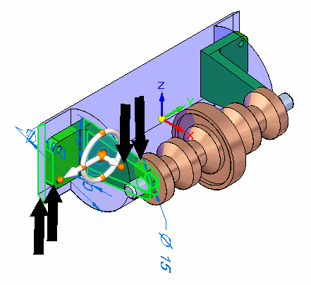
Select the axis of the steering wheel as shown.
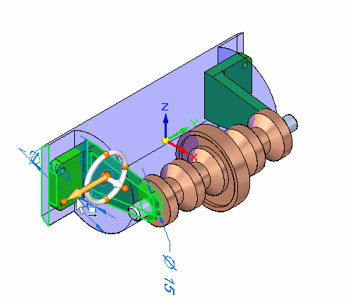
On the QuickBar, select the circle center key point.
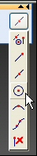
Click the circular center of the end face of the axle. The 4 faces will move.
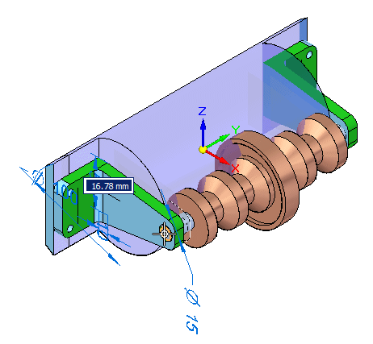
Because symmetry about the base reference planes is preserved using the Design Intent panel options, the parts are modified on the opposite side as well.
Clear the Selection.
Because the brackets are too tall, the axle is too far out from the plastic housing. You will shorten the bracket.
Select the face and the cylinder shown. Move the origin of the steering wheel to the face shown.
The steering wheel can be relocated by dragging the origin knob which is the large sphere at the center.
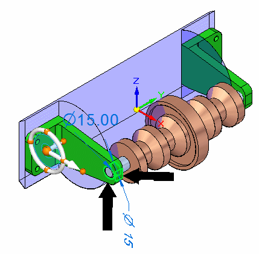
Drag the primary axis on the steering wheel so that the bracket becomes shorter. Enter 30.00 mm. The axial alignment between the bracket and the axle force the axle to stay aligned with the hole in the bracket.
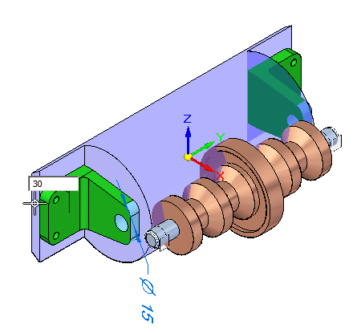
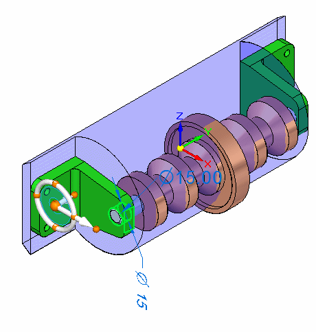
The axle moves with the bracket because of the Axial Align relationship used to place the axle.
Clear the Selection.
The face of the plastic part is too close to the bracket. You will move the face inward.
Select the face shown.
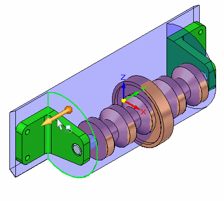
Rotate the view to a right view and move the face somewhere between the bracket face and the next face on the shaft. Exact placement is not important. Because the part is symmetrical about the base, the design intent relationships built into the model are preserved using the Design Intent panel. These settings control the behavior such that the opposite face is also positioned correctly.
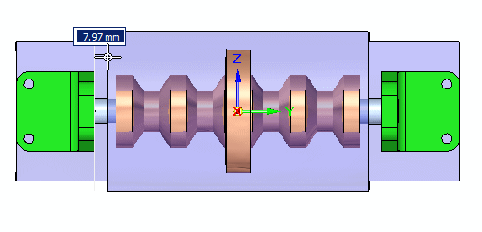
After in-place activating the plastic part, inter-part faces and an inter-part body will be created from other parts in the assembly.
Clear the select set.
Set the selection criteria to Part.
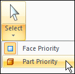
Double-click the plastic part to in-place activate the part. You are now in the part environment but can still see the other parts in the assembly.
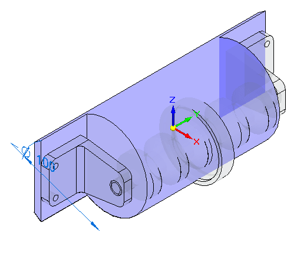
Using Inter-Part Copy, you will copy needed geometry from the assembly. You need two planar faces to create bolt holes in the plastic part to attach the brackets. You will also need the body of beltdrive.par.
Choose the Inter-Part Copy command.
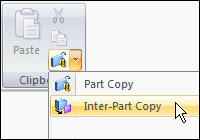
Linked Inter-Part copies of surfaces can only be created in the ordered environment. The Inter-Part surface created for this exercise does not need to be linked and we will stay in the Synchronous environment for this operation.
Select the bracket.
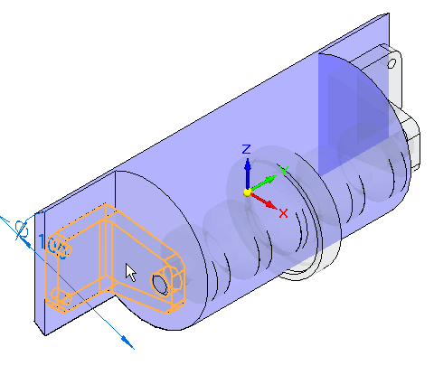
In the Select Faces step in the command bar, select Face. Select the face shown.
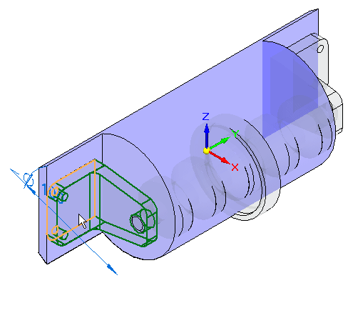
Click Accept. Repeat for the opposite side.
Click the Inter-Part Copy command and select the part shown.
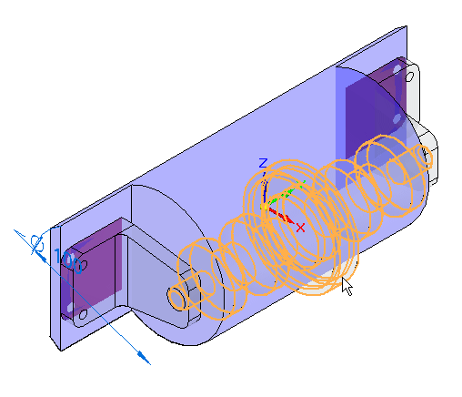
In the Select Faces step in the command bar, select Body. Select the whole body shown.
Click Accept. The body is created.
The two Inter-Part faces and the Inter-Part body, and a cutout will be used to cut the plastic part.
Click the View tab and in the Show group, click Hide Previous Level. This will turn off the display of the other parts in the assembly.
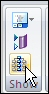
Click the Sketching tab. Lock the sketch plane to the face containing the Inter-Part copies. Click Project to Sketch and select each of the 4 holes on the two Inter-Part faces.
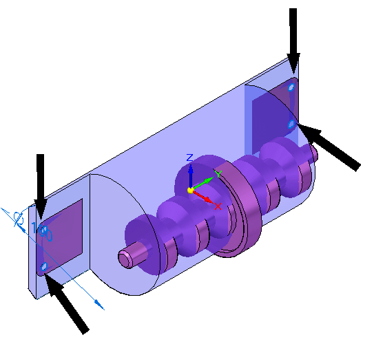
Hide the Inter-Part Copy faces, used to create the holes, in PathFinder. Click the Extrude command. Create cutouts from each of the holes.
Now you will draw a sketch for the first cutout in the housing. Select the sketch plane shown.
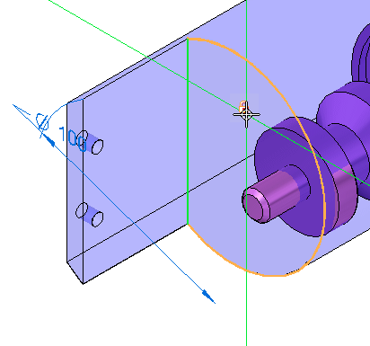
Draw the sketch below and create an open cutout that extends the full length of the part.
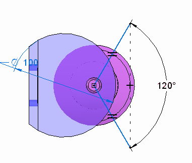
In the Relate group on the ribbon, use the Equal relationship to make the lines the same length. The angle between the lines is 120o. Use the Horizontal/Vertical relationship to line up the ends of the lines vertically. Intellisketch may put a Perpendicular relationship at the intersection of the two lines. You will need to delete that relationship in order to get the 120o driving dimension placed.
The part is shown.
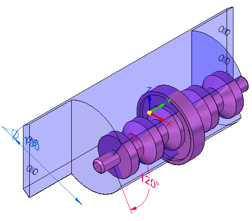
Click the Surfacing tab. In the Surfaces group, click the Offset command.
In the Select step in the command bar, set Select to Body. Select the Inter-Part Copy shown and Accept.
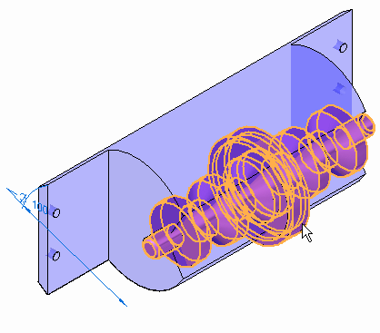
Enter 3.00 mm for the offset distance. For the direction, click as shown. Then click Finish.
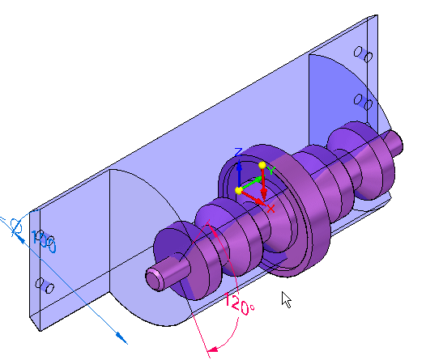
The offset surface is shown. Notice it is bigger than the Inter-Part Copy.
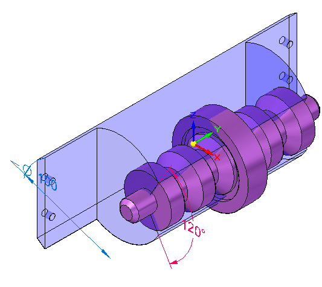
If the offset is smaller than the original part, you have chosen the wrong direction and will need to repeat the operation.
Turn off the Inter-Part Copy of the body in PathFinder.
Click the Home tab→Solids group→Add Body list→Subtract command.
Select the cylindrical part as the target body.
Select the offset surface as the tool body and Accept. Then click Finish.
Hide the offset surface in PathFinder.
The part is as shown.
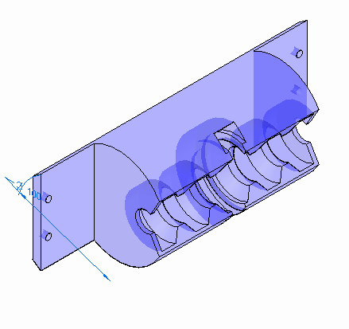
Click the Home tab and then click Close and Return to return to the assembly. The assembly is as shown.
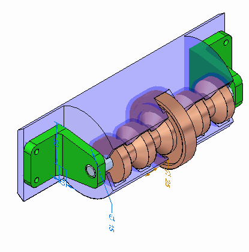
Now you will modify the angle of the angular cut in the plastic face.
Set the Selection Priority to Face.
Select the face shown and move the steering wheel so that the primary axis aligns with the axis of the axle as shown.
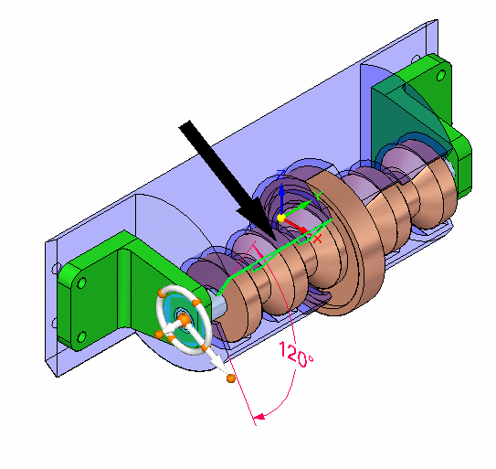
Select the steering wheel torus as shown and rotate with the mouse. Notice the angle of the cut in the plastic part changes.
Make sure the 120o dimension is unlocked so the face can move.
This completes the activity.
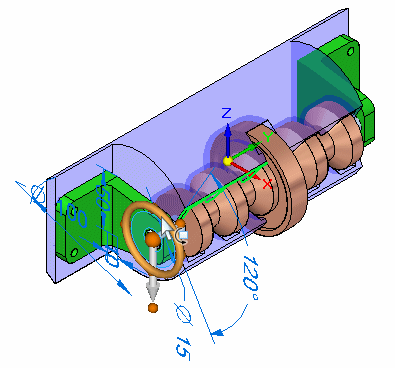
In this activity you learned how to modify parts in the context of an assembly using Solid Edge.
Click the Close button in the upper-right corner of the activity window.
Answer the following questions:
-
What is one advantage to modeling assemblies using synchronous components?
-
Can synchronous components in an assembly be copied using the steering wheel?
-
When using the steering wheel to move or copy an assembly component, when can the Design Intent panel be used?
-
What is one advantage to modeling assemblies using synchronous components?
Faces and components can be selected and modified directly in the assembly environment using the steering wheel and the Design Intent panel that allows you to preserve or ignore the design intent built into the synchronous model.
-
Can synchronous components in an assembly be copied using the steering wheel?
Synchronous geometry can be moved or copied using the steering wheel. Solid Edge will attempt to repair relationships that become invalid after a move if directed to do so.
-
When using the steering wheel to move or copy an assembly component, when can the Design Intent panel be used?
The Design Intent panel can be used with the steering wheel in assembly when faces are selected, and the geometry is synchronous rather than ordered.